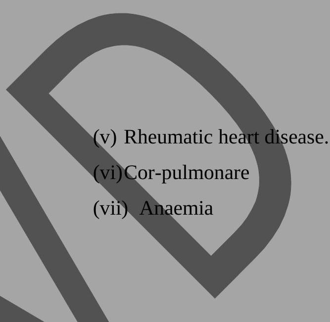
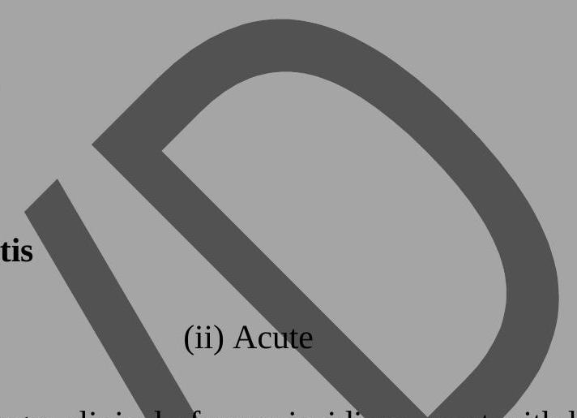
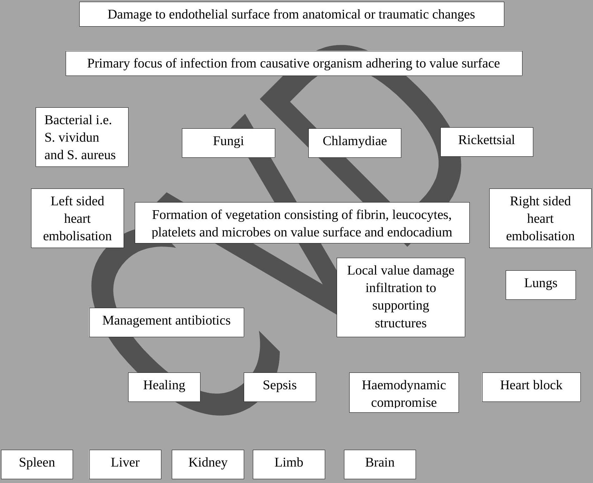

Heart Failure & Infective Endocarditis
Congestive Cardiac/Heart Failure (C.C.F)
This is a cardiovascular state in which the heart is unable to pump an adequate amount of blood to meet the metabolic needs of the tissues. C.C.F is not a disease, but a syndrome caused by a variety of pathophysiological processes.
Common Causes of C.C.F
Chronic Causes
- Coronary heart/artery disease.
- Hypertensive heart disease.
- Cardio myopathy.
- Bacterial endocarditis
Acute Causes
- Acute myocardial infarction.
- Pulmonary emboli.
- Hypertensive crisis. 
- Disyrrythmias.
- Thyrotoxicosis.
- Anaemia
Pathophysiology of C.C.F
- C.C.F is usually manifested by biventricular failure although one ventricle.
- May precede the other in dysfunction. Normally the pumping actions of the left and right sides of the heart complement each other producing a;
- Continuous flow of blood, however, as a result of pathological conditions, one side may fail while the other side continues to function normally;
- For a period of time. Because of the prolonged strain, the functioning side of the heart will eventually fail resulting in biventricular;
- Failure. The most common form of initial heart failure is;
- Left sided failure. C.C.F occurs in a tetro grade version progressing from the left ventricle to the pulmonary system to the right ventricle.
- This will usually lead to and is the main cause of right sided failure. However, right sided failure can occur as a result of right ventricular myocardial infarction or corpulmonare. C.C.F will eventually develop in the majority of persons with moderate to severe cardiac disease.
Left Sided Heart Failure
This results from left ventricular dysfunction which causes blood to backup through left atrium and into the pulmonary veins. The increased pressure causes fluid extra versation from the pulmonary capillary bed into the interstitium and then the alveoli which is manifested as pulmonary congestion and oedema.
- Diseases of the coronary arteries.
- Cardio myopathy.
- Aortic valvular disease.
- Hypertension.
- Rheumatic heart disease resulting into mitral value incompetence or stenosis.
When a myocardial infarction occurs, myocardial tissue is damaged and replaced by scar tissue. The scar tissue is less elastic and has poorer contractility than the undamaged myocardium. The loss of myocardial mass increases the workload on the remaining functioning tissue. If the functioning myocardial can't compensate for this less, the volume of blood ejected from the ventricles decreases and left heart failure results. When hypertension is present, the heart must pump blood against a high arteriol pressure eventually this can lead to left ventricular hypertrophy. Hypertrophic muscle has poor contractility and overtime will result in failure.
In aortic valvular heart disease, the left ventricle must contract forcefully to pump blood through the stenotic aortic value, overtime this results in left ventricular failure. This requires an increased amount of pressure that must be generated by the left ventricle. In addition, the value often fails to close completely and blood is regurgitated into the left ventricle.
In mitral value disease, a similar process involving the left artrium occurs.
Right-Sided Heart Failure
Right-sided heart failure from weakened right ventricle causes veneous congestion in the systemic circulation and results in peripheral oedema, hepatomegaly and spleenomegaly.
The primary cause of right-sided heart failure is left sided heart failure. In this situation, leftsided failure results in pulmonary congestion and increased pressure in blood vessels of the lungs (pulmonary hypertension). Eventually pulmonary hypertension results in right-sided heart failure cos-pulmonaxe (right ventricular dilatation and hypertrophy due to pulmonary pathology) can also cause right-sided heart failure.
Distended neck veins can be seen when a client with right-sided heart failure is in a semirecumbent position and this is due to increased pressure in the right atrium.
Other Causes of Right-Sided Heart Failure
- Myocardial infarction of the right atrium and ventricle.
- Chronic pulmonary diseases i.e. pulmonary TB, bronchitis, chronic pneumoconiosis, pneumonia etc.
- Tricuspid and pulmonary value stenosis.
- Pericarditis.
Factors Precipitating to Heart Failure
There are certain factors that can precipitate heart failure in a person with heart disease i.e.
- Dysrrythymias which lead to ineffective mechanical pumping.
- Reduction or ceasation of cardiac therapy either pharmacological or dietry.
- Infections either viral or bacterial.
- Emotional or physical stress.
- Second type of heart disease i.e. rheumatic heart disease.
- Anaemia which causes an increased heart rate as a compensatory mechanism to maintain tissue oxygenation.
- Thyrotoxicosis which causes an increased heart rate.
Compensatory Mechanisms
C.C.F can have an abrupt onset as with acute myocardial infarction or can be a gradual/slow insidious process and thus the result of slow progressive changes. The overloaded heart results to certain compensatory mechanisms to try to maintain adequate cardiac output.
- Sympathetic nervous system activation: Because there is inadequate stroke volume and cardiac output, the baro receptor reflexes cause sympathetic nervous system activation which increases the release of epinephrine and noreephrine. This results in an increased heart rate and myocardial contractility to raise cardiac output. This response also increases myocardial oxygen demand.
- Dilatation: Is an enlargement of the chambers of the heart. It occurs when pressure in the left ventricle is elevated over time. The muscle fibres of the heart stretch and thereby increase their contractility force. However, this increased contractility produces greater wall tension and more myocardial oxygen is required for contraction. Therefore, dilatation is a mechanism developed to cope with increasing blood volume. After maximum hypertrophy dilatation becomes primary mechanism. Eventually it becomes inadequate because the elastic elements of the muscle fibres are overstrained. Dilatation can progress to mitral value incompetence and regurgitation which further increases the cardiac workload.
- Renal response to heart failure: As cardiac output falls, blood flow to the kidneys decreases causing decreased glomeruli filtration. A complex reaction begins, the kidneys release rennin which reacts with angiotensinogen to form angiotensin then this causes;
- The adrenal cortex to release aldersterone which causes sodium retention.
- Increased vaso constriction which increases the arterial pressure.
- The posterior pituitary senses the increased osmotic pressure due to sodium retention and secrets anti-diuretic hormone (ADH).
- ADH increases water reabsorption in the renal tubules causing water retention.
- The decreased renal blood flow also stimulates the secretion of ADH. The cycle repeats itself creating a downward spiral of a client's condition, since vaso constriction increases after load and causes an increased workload on the heart.
- Hypertrophy: In chronic congestive heart failure, hypertrophy is an increase in the muscle mass and the cardiac wall thickens due to overwork and strain. It occurs slowly because it takes time for muscle tissue to develop. As myocardial mass increases, the need for additional blood and oxygen grows. This cannot be met in the client with heart disease.
Clinical Manifestations
The clinical manifestations of chronic C.C.F depend on:
- Age
- Underlying type
- Extent of heart disease
- Which ventricle is failing to pump blood effectful.
These manifestations include:
- Fatigue
- Dysponea
- Tachycardia
- Oedema
- Nocteuria
- Skin changes
- Behavioural changes
- Chest pain
- Cough
Fatigue: Is one of the earliest symptoms of chronic C.C.F. The client notices fatigue after activities that normally aren't tiering. The fatigue is due to impaired circulation and oxygenation of tissues. It is sometimes described as 'sick fatigue' because of the decreased amount of blood reaching the musculo skeletal system.
Dysponea: Is a common sign of chronic C.C.F. It is caused by increased pulmonary pressures secondary to interstitial and alveolar oedema. This results in fluid poor gaseous exchange because of fluid in the alveolar. The shortness of breath makes the client short of air hunger that prompts rapid shallow respirations. Dysponea can occur with mild exertion or at rest. Othopnoea is shortness of breath that occurs when a client is in a recumbent position.
Tachycardia: Because cardiac output is diminished there is an increased sympathetic nervous system stimulation to compensate for low output (It is important to remember that cardiac output = stroke volume x heart rate). If the stroke volume decreases, the heart rate increases to maintain the cardiac output.
Oedema: Is a common sign of C.C.F. It may occur in the legs (peripheral oedema), liver (hepatomagaly), abdominal cavity (ascites), lungs (pulmonary oedema and pleural effusion). If the client is bedfast, sacral oedema is mostly likely to develop pressing the oedematous skin with a finger may leave a transient indelitation (pitting oedema). The development of dependent oedema and or a sudden weight gain 2 kg or more is often indicative of exacerbated congestive failure.
Nocturia: A personwith chronic C.C.F will have decreased cardiac output, impaired renal perfusion and decreased urinary output during the day. However, when the person lies down at night, fluid movement from the interstitial spaces back into the circulatory system is enhanced. This causes increased renal blood flow and dieresis. The client may complain of having to avoid 6 or 7 times during the night.
Skin Changes: Because tissue capillary oxygen extractions increased in a person with chronic C.C.F, the skin appears dusky, it is also called cold and diaphrotic to touch. The peripheral vaso constriction that occurs to sheent blood to the vital organs is a minor compensatory mechanism in chronic C.C.F.
Behavioural Changes: Cerebral circulation may be impaired with chronic C.C.F especially in the presence of more widespread arteriosclerosis. The client or family may report unusual behavior including restlessness, confusion and decreased attention span or memory. These behavioural changes occur most often at night possibly because the client is experiencing more stimulation than during the day.
Chest Pain: In the presence of arteriosclerosis, C.C.F can precipitate chest pain because of decreased coronary perfusion from decreased cardiac output and increased myocardial work. Angina type of pain may accompany C.C.F whether it is acute or chronic. Others will be as per the side the failure has occurred.
Summary of the Clinical Manifestation
Right-Sided Heart Failure
- Peripheral oedema weight gain.
- Oedema of dependent body parts (sacrum, anterior tibia and pedal).
- Ascites
- Anasaria (massive generalized body oedema).
- Jugular vein distention.
- Liver engorgement (hepatomegaly) spleenomegaly
Left-Sided Heart Failure
- Increased heart rate.
- Left ventricular hypertrophy.
- Poor oxygen exchange.
- Pulmonary oedema (rates).
- Dysponea shallow up to 32 to 40/min.
- Othopnoea.
- Paraxicimol nocturnal dysponea.
- Cough which dry hacking is caused by alveolar irritation from fluid accomdation.
- Heart sound will be heard from vibrations of the ventricle wall due to resistance to ventricular feeling.
Diagnosis of C.C.F
The primary goal in the diagnosis is to determine the underlying cause of heart failure. Diagnostic measures to assess the degree of heart failure include:
- History and physical examination.
- Chest x-ray film.
- ECG.
- Exercise stress testing.
- Echocardiograph: To measure the size of cardiac chambers and to assess ventricular function.
- Cardiac catheterization and angiography are useful in detecting the underling heart disease.
- Haemodynamic monitoring via a pulmonary artery catheter which provides for a mean of directly assessing cardiac function.
Classifications of Persons with C.C.F Based on the Persons Tolerance to Physical Activity (By New York Heart Association)
- There is class one: There is no limitation on physical activity and ordinary physical activity not resulting in symptoms.
- Class II: Slight limitation on physical activity, no symptoms at rest but symptoms possible with ordinary physical activity.
- Class III: There are more severe limitations. Client may be comfortable at rest but clinical manifestations will show with slight physical activities.
- Class IV: Inability to carry on any activity without producing symptoms and symptoms are also possible at rest.
Therapeutic Management
Treatment of underlying cause is one of the most important goals of reaction for C.C.F. For example;
- Dysrrythymias have precipitated the failure they should be treated accordingly.
- Hypertension is the cause antihypertensive drugs should help.
- Valvular defects are the cause surgery is required.
- Oxygen therapy: Oxygen is given to the patient at 2 to 6 litres per minute. This is because in a person with C.C.F, oxygen circulation of the blood is reduced because the blood is not adequately oxygenated at the lungs. Therefore, administration of oxygen improves circulation and assists greatly in meeting tissue oxygen needs. Thus oxygen therapy helps to relieve dysponea and fatigue.
- Rest: Physical and emotional rest allows the client to conserve energy and decreases the need for additional oxygen. The degree of rest recommended depends on the severity of heart failure. For example, a patient with severe C.C.F needs to be on complete best rest while the one with mild C.C.F can be combulatory with restriction of strenuous activities.
Pharmacological Therapy
(i) Digitalis Preparations
- This increase the;
- Force/strength of cardiac contraction.
- They also; decrease the conduction speed within the myocardium and show the heart rate. This action provides more complete emptying of the ventricles thus diminishing the volume remaining in the ventricles during diastole cardiac output increases because of an increased stroke volume from improved contractility.
Dosage
Usually 0.25 mgs d or od. At times the patient may be given 0.5 to 1 mg I.V. or I.M. then followed by 0.25 mgs . For children and old patients, the dosage is reduced to 0.025 mgs daily.
(ii) Diuretics
These are used in heart failure to mobilize oedematous fluid, reduce pulmonary venous pressure.
To reduce preload
If excess vascular volume is excreted, blood volume returning to the heart can be reduced and thus improved cardiac function. Thiazides are usually the first choice, because they are useful in treating oedema secondary to C.C.F as well as in controlling hypertension.
Example: Lasix (frusemide: Dose 40 to 80 mgs depending on the severity of oedema I.V., I.M. or orally.
(iii) Vaso Dilator Drugs
These reduce systemic vascular resistance and pulmonary and peripheral venous pressure. This increases left ventricular preload thus myocardial function is enhanced and myocardial oxygen demand is lessened. These drugs include:
- Angiotensin converting enzymes inhibitors.
- Calcium channel brokers etc.
(iv) For the Cough
The patient is given cough mixture or mist or expectorant
Nutritional Considerations
- The oedema of chronic C.C.F is often treated by dietry restriction of sodium. A diet for a client with C.C.F should have 2 g of sodium.
- The diet such as milk, cheese, breach, cereals, vegetables, canned foods must be eliminated from the patient's diet.
Nursing Management
- Activity intolerance related to fatigue secondary to cardiac insufficiency, pulmonary congestion and inadequate nutrition (dyspnoea, weakness, fatigue, increase or decrease in pule on exertion).
Nursing Interventions- Have the client to rest in bed or chair when tired.
- Provide emotional and physical rest.
- If the patient is in bed, teach leg exercises to prevent phlembothrombosis.
- Assess the patient daily for dyspnoea, fatigue and pulse rate to determine the level of activity that can be performed.
- Provide frequent small feeds instead of 3 large meals per day.
- Teach client about expenditure of energy on various activities.
- Sleep pattern disturbance related to nocturnal dyspnoea and inability to assume favoured sleep position (inability to sleep through the night).
Nursing Interventions- Explain aetiology of nocturnal dyspnoea.
- Explore with the patient alternative positions of comfort to relieve dyspnoea.
- Fluid volume excess related to heart/pump failure (oedema, dyspnoea on exertion).
Nursing Interventions- Evaluate degree of peripheral oedema and measure abdominal girth daily.
- Administer digitalis agents and diuretics as presented daily.
- Assess intake and output 8 hourly.
- Weigh the client daily.
- Observe manifestations of hypovolaemia.
- Provide sodium restricted diet as ordered.
- High risk for impaired skins integrity related to oedema or immobility (oedema, taut shinny skin, impaired mobility).
Nursing Interventions- Handle oedematous skin gently.
- Pad bony prominence.
- Assess oedematous areas every shift for skin breakdown.
- Impaired gas exchange related to excess preload, mechanical failure or immobility (increased respiratory rate, dyspnoea on exertion).
Nursing Interventions- Elevate head of bed to fallulow's position.
- Support client's arms with pillows.
- Use food board for legs.
- Administer oxygen by naso canula.
- Ausculitate for lung and heart sound 4 hourly.
- Anxiety related to dyspnoea or perceived threat of death (restlessness, irritability, expression of feelings of live threat).
Nursing Interventions- Assess facial expression and behavior for feeling of apprehension.
- Allow the patient to ask questions.
- Promote sense of security by answering calls promptly from the patient/relative.
- Explain all procedures due to the patient.
- Assess past methods of coping and assist in adapting these methods to present lifestyle limitations.
- Demonstrate calm behavior with the patient.
- Ineffective individual coping related to alterations in lifestyle possible inability to use past coping methods or perceived loss of control (use of ineffective coping behaviours such as shouting, blaming, anger, withdrawal, social isolation, increased dependency).
Nursing Interventions- Teach client about disease process and altered physiological function.
- Encourage patient to adopt lifestyle compatible with degree of heart impairment.
- Assist client and family in planning necessary changes.
- Encourage the client who seems discouraged or to plan and participate in own plan of care.
- Question client regarding concerns.
- Support the coping strategies and suggest alternate strategies to replace ineffective ones.
- Self care deficit (total related to dyspnoea and fatigue) inability to perform part or all of the activities of daily living.
Nursing Interventions- Assist clients/patients with all activities of daily living as needed.
- Assure patient of your willingness to assist with personal care.
- Advice family of patient's fluctuating inability regarding self care activities.
- Altered health maintenance related to lack of knowledge regarding signs and symptoms of C.C.F, proper diet and medications (lack of adherence to low sodium diet, questioning of disease, diet and medications).
Nursing Interventions- Teach the patient manifestations to report including shortness of breath at rest, swelling of ankles feet or abdomen, nausea or vomiting, loss of appetite, weight gain of 1 to 2 kgs in a 2 day period, frequent urination, persistent cough, changes in heart rate more than 20 or less than $20+$ or -20 beats.
- Instruct the client on dietry restriction and medication regime.
NOTE: Many patients with C.C.F do not experience an acute episode, if they do, they are usually initially managed in a critical care unit and later transferred to a general unit when their conditions have stabilized.
Chronic Management
C.C.F may be a chronic illness for most persons and important nursing responsibilities are:
- Educating the patient about the physiological changes that have occurred.
- Assisting the patient to adapt to both the physiological and psychological changes. It must be emphasized to the client that it is possible to live productively with his health problem.
- Diet and weight management.
- Drug therapy.
- Rest.
Complications of C.C.F
- Pulmonary Oedema: Which is a term used to refer to an acute life threatening situation in which the lung alveolar become filled with serosanguinous fluid.
- Pleural Effusion: Resulting from increasing pressure in the pleural capillaries. A transdation of fluid occurs from these capillaries into the pleural space.
- Left Ventricular Thrombus: With acute or chronic C.C.F, the enlarged ventricle left and poor cardiac output combines to increase the chance of thrombus formation in the left ventricle.
- Hepatomegaly: C.C.F can lead to severe hepatomegaly. The liver lobules become congested with venous blood. The hepatic congestion leads to impaired liver function functionally live cells die, fibrosis occurs and liver cirrhosis can develop.
- Weight Changes: Initially there may be a progressive weight gain due to fluid retention. The client with C.C.F has an increased metabolic rate. Abdominal fullness from ascites and hepatomegaly frequently causes anorexia and nausea. Late the patient decreases in weight, the patient becomes too sick to eat and there is decreased oxygen and nutrients transported to the tissues.
- Decompensasted Heart Failure: When the compensatory mechanisms of dilatation, hypertrophy and tachycardia function to provide adequate output to maintain tissue oxygenation. The patient has compensated heart failure when these mechanisms can no longer assist the heart in maintaining cardiac output, the patient has decompensated heart failure and this state is very fatal.
Summary of Nursing Management
- Complete bed rest on sitting up position.
- Oxygen administration.
- Administration of medications as prescribed, observe effects and side effects.
- Frequent total patient assessment depending on the condition (wholly). Any abnormalities be reported immediately (weight, TPRIBP, pulse, urine, skin).
- Patients comfort: This include body comfort, linen and the environment, elimination.
- Dist: Should be salt free. Roughage be included to avoid constipation and small frequent fees at intervals and well balanced.
- Share health messages about the disease and also diet.
- Physical and emotional support.
- When patient gets well, discharge home and follow-up.
Infective Endocarditis (Bacterial)
This is an infection of the endocardial surface with micro organisms present in the lesions. The endocardium and the inner layer of the heart is continuous with the heart values therefore, inflammation from infective endocarditis frequently affects the heart values.
Occurrence: The frequency is now seen in older adults, clients after prosthetic value placement and intervenous drug abusers.
Prognosis: The prognosis has changed with introduction of antiobiotics because before then, infective endorcartis was almost always fatal. The mortality rate is now 20 to $40 \%$.
Predisposing Conditions
- Cardiac conditions;
- Prosthetic heart values (artificial)
- Rheumatic heart disease
- Congenital heart disease
- Degenerative heart disease
- Mitral value prolapsed
- Vulvular lesions
- Heart murmurs
- Cardiac surgery
- Idiopathic hypertiophic sub-aortic stenosis
- Immune Suppressive Conditions i.e.
- Cancer
- Severe burns
- Immune suppressive therapy i.e. radiotherapy.
- Invasive procedures i.e.
- Peripheral arterial veneous fistula i.e. that used in chronic haemour dialysis.
- In dwelling intraveneous or intra-arterial catheters.
- Intraveneous drug abuse.
- Invasive diagnostic procedures.
- Alcoholism
Classification of Infective Endocarditis
- Sub-acute 
- Sub-Acute: This form has a longer clinical of more insidious onset with less toxicity and the causative organism is usually of low virulence. Most often streptococcus viridian.
- Acute Form: Has a shorter clinical course with a more rapid onset increased toxicity and a more pathogenic/virulent causative micro organism that is staphylococcus aureous.
Causes
Initially it was being caused by bacteria but of late micro organisms such as fungi, Chlamydia and rickettseal have been identified.
NOTE: These micro organisms get entry into the heart because of surgical interventions, intravenous injections and invasive diagnostic procedures.
Pathophysiology
The vegetation form that is the primary lesions of infective endocarditis consist of fibrin, leucocytes, platelets and microbes that adhere to the value surface or endocardium. The loss of these fragile vegetations into the circulation results in embolisation. In left sided heart vegetations systemic embolisation occurs progressing to the organs particularly the kidney, spleen and brain and there may be limp infarction. Right sided heart lesions embolise to the lungs. The infarction may be spread locally to cause damage to the values or to their supporting structures. The resulting valvular incompetence and eventual invasion of the myocardium in the ongoing disease results in C.C.F, generalized myocardial dysfunction and continued sepsis.
Sequence of Events in Infective Endocarditis
Sources of Infections
| Organism | Situation/Origin |
|---|---|
| Streptococcus viridians | Dental procedures |
| Streptococcus bovis | GIT malignant disorders |
| Enterococcus species | GIT and genital urinary procedures |
| Staphylococcus aureous | I.V. drug use, cardiac surgery, nosocomial infections (URTI), parenteral therapy, prosthetic values. |
| Psedomonus aeuraginosa | I.V. drug use and surgery |
| Candida, aspergilles organisms | Immuno compromised persons |
Clinical Manifestations
These aren't quite specific as there can be involvement of multiple organ systems.
- Fever in more than 90% of patients.
- Chills
- Weakness
- Malaise
- Fatigue
- Anorexia
- Athrelgia
- Myleigia
- Backache
- Abdominal discomfort
- Weight loss
- Headache
- Clubbing of fingers
The onset of a new murmur is also frequently noted. C.C.F occurs up to $80 \%$ of patients with aortic value endocarditis and in approximation 50% of patients with mitral value endocarditis. Apart from the above general manifestations there is;
Vascular Manifestations
- Splinter haemorrhages that may occur in the nail beds.
- Osler nodes - painful, tender, red or purple pea size lesions. They may be found on finger tips or toes.
- Janeway lesions - Flat, painless, small red spots found on the palms or soles.
- On funduscopic examination, there may be retinal haemorrhagic lesions called Roth's spots.
Clinical Manifestations Secondary to Embolisation
- Embolisation to the spleen may result into left upper quadrant pain and spleenomegaly. There will be local tenderness and abdominal rigidity.
- Embolisation to the kidneys may cause pain to the flunk, haematuria, asotenia and glomerulonephritis.
- Emboli may lodge in small peripheral blood vessels and cause gangrene.
- Embolisation to the brain may cause neurological problems i.e. hemiplegia, ataxia, aphasia and change in level of consciousness.
- Pulmonary emboli may occur in right sided lesions.
Diagnostic Procedures
- History taking: Obtaining the patients recent health history is important in assessing infective endorcarditis. Queries should be made regarding on recent dental, urological, surgical or gymecological procedures, including normal or abnormal obstetrical deliveries. Previous history of heart disease, recent cardiac catheterization, I.V. infusions and catheters as well as skin, respiratory or urinary tract infections should be documented.
- Laboratory investigations: Blood for culture and sensitivity, WBC, ESR which will be raised, urine for haematuria (microscopic).
- Chest x-ray performed to check presence of C.C.F.
- Echocardiogram performed to detect the presence of vulvular vegetations or abnormal value leaflet movement resulting from growth of vegetations.
- Cardiac catheterizations: To detect the degree of valvular insufficiency and to determine the involvement of more than one value.
Management
A. Medical Management
a) Prophylactic Treatment
Clients with various anatomical abnormalities of the heart or great vessels are at great risk of contracting endocarditis. Prophylactic treatment is recommended for patients with some common cardiac heart conditions before they undergo certain surgical conditions. Specific antibiotic regiments are recommended for dental, respiratory tract, gastro intestinal, genitor urinary procedures.
b) Therapeutic Management
Accurate identification of the infecting organism is the key to successful management. The reaction of infective endocarditis usually requires 4 to 6 weeks of parentral single or combination of antibiotic therapy.
Drugs given depending on the situation
| Clinical Situation | Antibiotic Regiment |
|---|---|
| Empirical Situation | |
| Acute | Penicillin, Ampicillin and Gentamycin |
| Sub-acute | Ampicillin and Gentamycin |
Other drugs that can be used are penicillin G, streptomycin with fungal infection can be given Amphotericin B. During the reaction periodic monitoring of the patients, antibiotic serum levels must be performed and subsequent blood cultures may be done to evaluate the effectiveness of the treatment.
B. Nursing Management
a) Prevention/Health Maintenance and Promotion
Assessment of the client's history and understanding of the disease process are crucial for planning and implementing appropriate health maintenance strategies. It is important that these at risk of developing endocarditis are identified and educated to avoid nosocomial infections, fatigue to maintain good oral hygiene, to visit the dentist at regular intervals and to take prophylactic antibiotic therapy before any invasive procedure.
b) Acute Intervention
Patient with infective endocartitis require hospitalization for 2 to 4 weeks. Physical assessment and history taking are done. In particular, there should be frequent monitoring of body temperature as fever is one of the common early signs. Measures to reduce fever are employed. Bed rest is necessary when there is fever or complications such as heart done are present. Otherwise, the patient may be ambulant and perform moderate activities. Heart sounds should be assessed with vital signs to detect a change in the character of the cardiac murmur and presence of extra diastolic sounds. Altalgia is a common problem and may involve multiple joints and be accompanied by myelgia. The patient should be assessed for joint tenderness, range of motions and muscle tenderness. The oral mucousa, conjunctiva, upper chest and lower extremities should be examined for petechial (bleeding spots of blood under skin). A general assessment of systems should be completed to facilitate recognition of haemolynamic and embolic complications.
Laboratory data should be monitored to determine the effectiveness of long term high dose antibiotic therapy received by the client. The I.V. line should be monitored for patency and antibiotics given as scheduled monitor the side effects of these antibiotic or drugs given.
To prevent consequences from immobility, the patient should wear anti-embolism stockings, perform range of motion exercises and turn, cough and deep breathe every 2 hours. The patient may experience anxieties and fear associated with the illness, provide support during this period and employ measures to reduce fears and anxieties.
c) Chronic Management
This focuses on the education of the patient regarding the nature of the disease and on the reduction on the risk of re-infection. The patient is taught about symptoms that may indicate recurrent infections such as fever, fatigue, malaise, chills and the importance of seeking medical assistance if any of these symptoms occur. The patient needs to be instructed about the need for prophylactic antibiotic therapy before any invasive procedure is performed to prevent reoccurrence. The nurse must explain to the client the relationship of follow-up care, good nutrition and early reaction of common infections to maintain good health.